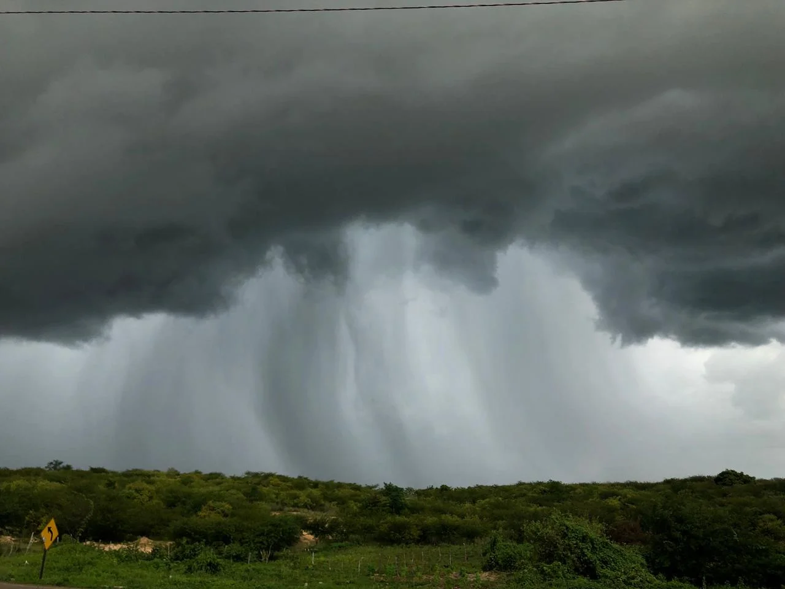
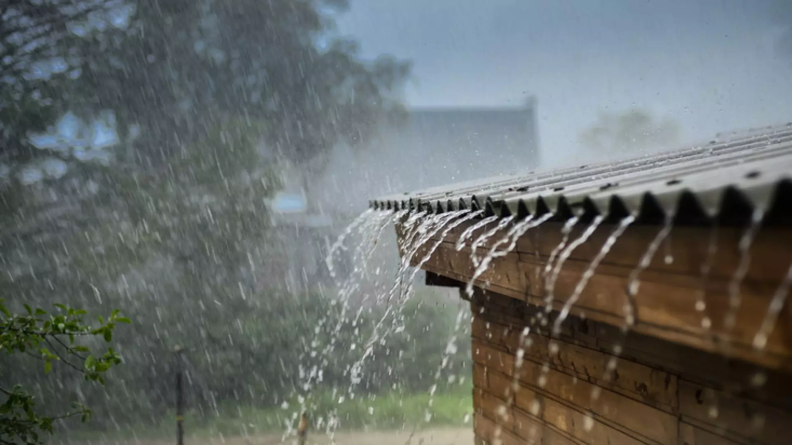
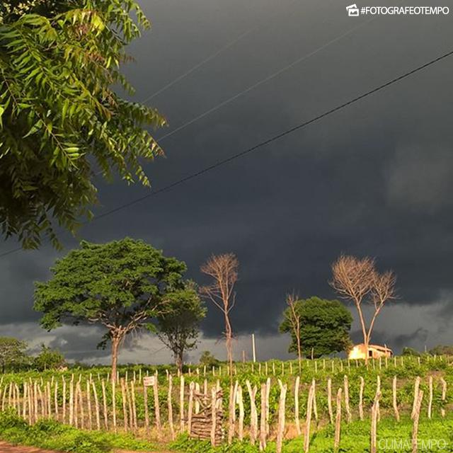

Tipos de Chuva
- Chuvas frontais: Também chamadas de ciclônicas, originadas do encontro entre uma massa de ar fria e outra quente.
- Chuvas convectivas: Também chamadas de chuvas de verão, ocorrem devido à diferença de temperatura nas camadas próximas da terra.
- Chuvas orográficas: Também chamadas de chuvas de relevo, estão ligadas a barreiras naturais do relevo.

Tipos de Fenômenos
- Zona de Convergência Intertropical (ZCIT): Sistema que transfere calor e umidade dos oceanos para a atmosfera.
- El Niño: Provoca secas severas no Norte e Nordeste, reduzindo significativamente as chuvas.
- La Niña: Gera grandes volumes de chuva no Norte e Nordeste, aumentando a umidade e ocasionando frentes frias.
- Ondas do Leste: Provocam chuvas intensas na costa leste do Nordeste, podendo causar enchentes.

Peculiaridades das Chuvas no Sertão
- Irregularidade na ocorrência
- Concentração das chuvas em poucos meses
- Distribuição espacial desigual das chuvas

Impactos Positivos das Chuvas
- Reabastecimento dos reservatórios de água
- Crescimento rápido da vegetação (caatinga)
- Melhoria das condições para a agricultura familiar
- Melhora geral na qualidade de vida da população